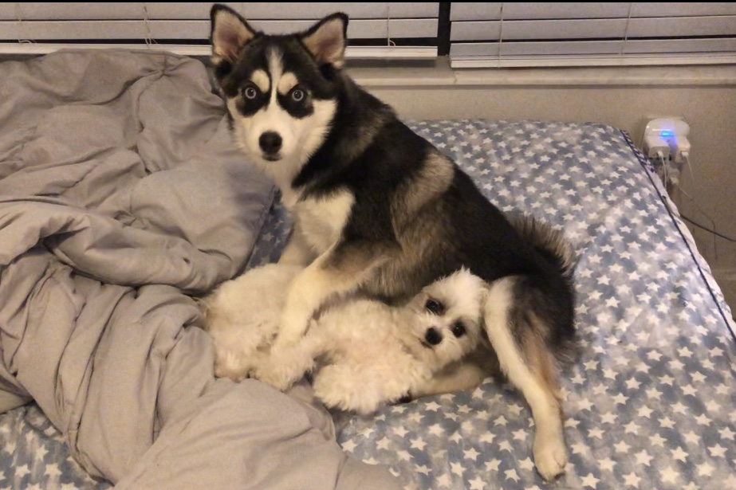

A good dog always has good friends! After know about me, let’s move to meet my besties.
Chocho
When I was only 4 months old, I met my first best friend, a Maltese called Chocho. He was 8 months older than me, so I sometimes imitated him and learned from him. Chocho’s mom is friend of my mom, they often go to each other’s home so me and Chocho can meet frequently. He is a more introverted boy who doesn’t have much contact with other dogs.
At first, he did not accept me because I was too active and playful, he just wanted me to leave him alone. But I never gave up. My knack was rushing at him, smelling him, licking him, and dragging his legs until he got mad and tried to chase me. Finally, I aroused his interest, and he gradually became willing to stay with me.
Tata

Last year, when I was 2 years old which meant I was already an adult, my parents’ roommates brought Tata home. I thought he was a Siberian Husky because I had seen several Husky before, they were all black and white with blue eyes, it was exactly how Tata looked like. Tata was even more active than me, you know, the Husky’s common personality. Sometimes he made me felt annoyed. I suddenly could understand how Chocho felt when I came to him, but I had no choice because Tata and me lived together. Tata’s parents bought him a bunch of toys but he just wanted mine. When I got a toy, he first stared at me for a long time – he always very patient at this time, and then tried to drag and grab it from me. Of course I won’t let him, so we began a tug-of-war.

Time flies. Tata is 8-months old, which means most of dog will stop growing up. I suddenly notice that Tata is much smaller than a normal Husky, and there are some yellow areas on his hair. That cannot be a disease because he ate and was treated very well. Finally I learned from them that Tata is a Pomsky which is Pomeranian and Husky crossbreed. Now we are really good friends, although we still scramble for toys and treats. He is really a meme maker. His facial express is so funny that makes people often takes pictures. I am not as good as him in meme field but I am proud of him because he always brings laughter to people.
